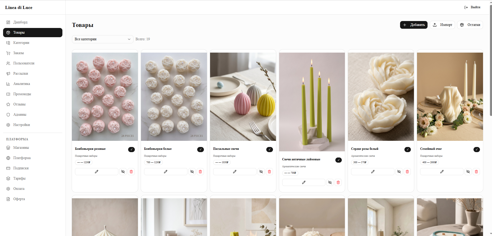
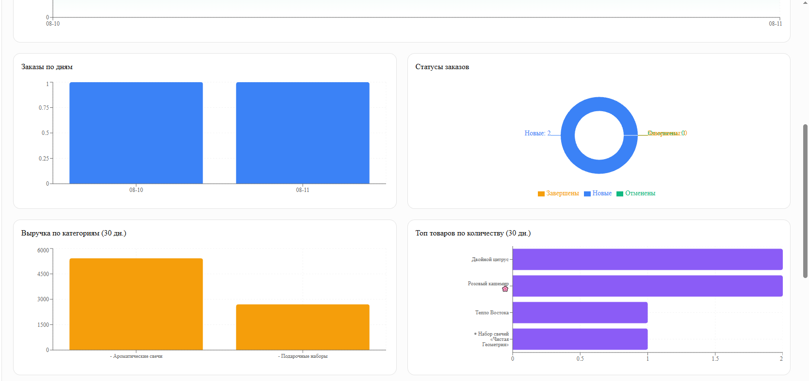

Каталог и остатки
Ассортимент без ручной рутины
Товары, категории, характеристики, варианты, цены и остатки. Добавляйте вручную, переносите из публикаций через AI или импортируйте выгрузки Ozon, Wildberries и Яндекс Маркета.

Возможности
От первой карточки товара до повторной продажи: операционные и маркетинговые инструменты собраны в одной панели.
Каталог и остатки
Товары, категории, характеристики, варианты, цены и остатки. Добавляйте вручную, переносите из публикаций через AI или импортируйте выгрузки Ozon, Wildberries и Яндекс Маркета.

Заказы и оплаты
CRM
Продвижение
Доверие
Оставить отзыв можно после покупки. Рейтинг и обратная связь помогают выбирать товар без выдуманного социального доказательства.
Панель управления
Выручка, конверсия в оплату, заказы, категории, товары, промокоды и рейтинги доступны в единой аналитике.
Подробнее об аналитике ↗
Все возможности доступны на пробном периоде.